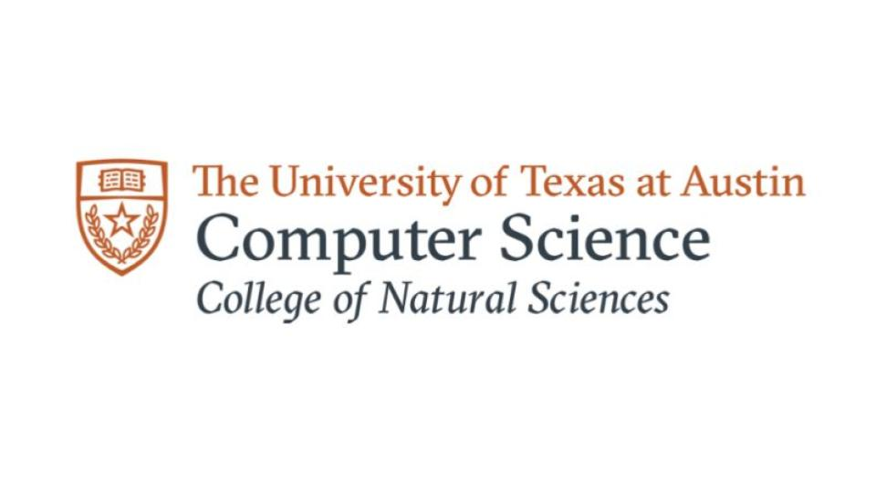

Work & Research Experience
Jun 2026
-
Present
Software Engineer
Loopfour (YC W23)
Nov 2025
-
Present
Undergraduate NLP Researcher
Moody College of Communication
- Categorized narratives via anchor-based semantic classification using sentence embeddings and cosine similarity
- Engineered BERTopic and RegEx feature-engineering pipeline to analyze demographic disparities in financial complaints
Oct 2025
-
Feb 2026
Undergraduate ML Researcher (LDOS)
UT Austin
- Designing low-latency Model Context Protocol in C to synchronize decision-making across learned OS components
- Benchmarking protocol on CloudLab bare-metal instances using conflicting learned agents (e.g., Prefetcher vs. Allocator)
Jun 2025
-
Aug 2025

Software Engineer Intern
Capital One
- Architected cache library and Snowflake dataset using Python and AWS Lambda for omni-channel experience
- Integrated cache into Vue.js and Vuex webpage, improving workflow completion by 40% for 80K monthly fraud concerns
- Built educational phishing simulation platform using Next.js and Twilio to send custom emails and track user clicks
Sep 2024
-
Jan 2025

Undergraduate ML Researcher (DBG)
UT Austin
- Trained and tested GCNNs and PyTorch SB3 reinforcement learning models to optimize network communication
- Leveraged NumPy, Pandas, and Matplotlib to present data analysis to U.S. Army Futures Command's UTDD
Jun 2024
-
Aug 2024
Software Engineer Intern
Fidelity Investments
- Enhanced batch responsible for 100M+ updates to central DB with AWS Q Developer, SQL, & MyBatis.
- Accelerated processing by 20% by migrating 30+ files from C++ to Java for multi-threading and cloud integration.
Jun 2023
-
Aug 2023

Fullstack Engineer Intern
JPMorgan Chase & Co.
- Analyzed and displayed 50K+ transactions from Apache Cassandra database using Java, JavaScript, Spring Boot, and React.
- Followed Agile Iterative Approach using Scrum and SAFe Frameworks through 45+ meetings.
- Demonstrated final web applications to 15+ JPMC project managers with a 98% performance rating.